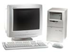
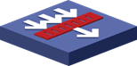

<!--
  $Id: ports.html,v 1.78 2012-01-08 10:28:37 gaudenz Exp $
  Copyright (c) 2006-2010, JGraph Ltd
  
  Ports example for mxGraph. This example demonstrates implementing
  ports as child vertices with relative positions and drag and drop
  as well as the use of images and HTML in cells.
-->
<html>
<head>
	<title>Ports example</title>
	<style type="text/css" media="screen">
		BODY {
			font-family: Arial;
		}
		H1 {
			font-size: 18px;
		}
		H2 {
			font-size: 16px;
		}
	</style>

	<!-- Sets the basepath for the library if not in same directory -->
	<script type="text/javascript">
		mxBasePath = '../src';
	</script>

	<!-- Loads and initializes the library -->
	<script type="text/javascript" src="../src/js/mxClient.js"></script>

	<!-- Example code -->
	<script type="text/javascript">
		// Program starts here. Creates a sample graph in the
		// DOM node with the specified ID. This function is invoked
		// from the onLoad event handler of the document (see below).
		
		function main(container, toolbar, sidebar, status)
		{
			
			// Checks if the browser is supported
			if (!mxClient.isBrowserSupported())
			{
				// Displays an error message if the browser is not supported.
				mxUtils.error('Browser is not supported!', 200, false);
			}
			else
			{				
				// Enables guides
			    mxGraphHandler.prototype.guidesEnabled = true;

				// Workaround for Internet Explorer ignoring certain CSS directives
				if (mxClient.IS_IE)
				{
					new mxDivResizer(container);
					new mxDivResizer(toolbar);
					new mxDivResizer(sidebar);
					new mxDivResizer(status);
				}
				
				// Creates a wrapper editor with a graph inside the given container.
				// The editor is used to create certain functionality for the
				// graph, such as the rubberband selection, but most parts
				// of the UI are custom in this example.
				var editor = new mxEditor();
				var graph = editor.graph;
				var model = graph.getModel();

				// Hook to return the mxImage used for the connection icon				
				graph.connectionHandler.getConnectImage = function(state)
				{
					return new mxImage('images/connector.gif', 16, 16);
				};

				// Does not allow dangling edges
				graph.setAllowDanglingEdges(false);

				// Sets the graph container and configures the editor
				editor.setGraphContainer(container);
				
				//graph.ingnoreScrollbars = true;
				
				var config = mxUtils.load(
				'editors/config/keyhandler-commons.xml').
						getDocumentElement();
				editor.configure(config);

			    // Disables HTML labels for swimlanes to avoid conflict
				// for the event processing on the child cells. HTML
				// labels consume events before underlying cells get the
				// chance to process those events.
				//
				// NOTE: Use of HTML labels is only recommended if the specific
				// features of such labels are required, such as special label
				// styles or interactive form fields. Otherwise non-HTML labels
				// should be used by not overidding the following function.
				// See also: configureStylesheet.
				graph.isHtmlLabel = function(cell)
				{
					return true;
				}
				
				//...
				graph.getLabel = function(cell){
					if(cell.value!=null){
						return cell.value.label;
					}					
					return mxGraph.prototype.getLabel.apply(this,arguments);	 
				}

				// Shows a "modal" window when double clicking a vertex.
				// Enables new connections
				graph.setConnectable(true);

				// Adds all required styles to the graph (see below)
				configureStylesheet(graph);
				
				// Adds sidebar icon.
				var ClientObject = new Client('myClient');
				var client = new mxCell(ClientObject,new mxGeometry(0,0,80,80));
				client.setVertex(true);
				client.setConnectable(true);
				
				client.value.type = 'Client';
				client.value.ip = '192.168.1.1';
				client.value.interface = '1';
				addSidebarIcon(graph, sidebar,client,'images/icons48/client.png');
				
				// Adds sidebar icon.
				var InternetObject = new Internet('myInternet');
				var internet = new mxCell(InternetObject,new mxGeometry(0,0,80,80));
				internet.setVertex(true);
				internet.setConnectable(true);
				
				internet.value.type = 'Internet';
				internet.value.ip = '192.168.1.1';
				internet.value.interface = '1';
				addSidebarIcon(graph, sidebar,internet,'images/icons48/internet.png');
				
				// Adds sidebar icon.
				var RouterObject = new Router('myRouter');
				var router = new mxCell(RouterObject,new mxGeometry(0,0,80,80));
				router.setVertex(true);
				router.setConnectable(true);
				
				router.value.type = 'Router';
				router.value.ip = '192.168.1.1';
				router.value.interface = 1;
				addSidebarIcon(graph,sidebar,router,'images/icons48/router.png');
	
				//Adds sidebar icon
				var ServerObject = new Server('myServer');
				var server= new mxCell(ServerObject,new mxGeometry(0,0,80,80));
				server.setVertex(true);
				server.setConnectable(true);
				
				server.value.type = 'Server';
				server.value.ip = '192.168.1.1';
				server.value.interface = 1;
				addSidebarIcon(graph,sidebar,server,'images/icons48/server.png');
							
				//Adds sidebar icon
				var SwitchObject = new Switch('mySwitch');
				var sw= new mxCell(SwitchObject,new mxGeometry(0,0,80,80));
				sw.setVertex(true);
				sw.setConnectable(true);
				
				sw.value.type = 'Switch';
				sw.value.ip = '192.168.1.1';
				sw.value.interface = 1;
				addSidebarIcon(graph,sidebar,sw,'images/icons48/switch.png');
				
				// Defines a new export action
				editor.addAction('export', function(editor, cell)
				{
					if(!isIconConnected(graph))
					{
						alert("some icons are not connected");
					}else if(!isSwitchConnected(graph))
					{
						alert("123");
					}else
					{
					var xmlform = new mxForm();
					
					var textarea = document.createElement('textarea');
					textarea.style.width = '400px';
					textarea.style.height = '400px';
					var enc = new mxCodec(mxUtils.createXmlDocument());
					var node = enc.encode(editor.graph.getModel());
					textarea.value =mxUtils.getPrettyXml(node);
					var xmlfield = xmlform.addField('',textarea);
					
					// Defines the function to be executed when the
			  // OK button is pressed in the dialog
					var okFunction = function()
					{	
						mxUtils.save('D:\\test.xml',xmlfield.value);
						alert("the xml file has been saved as D:\\test.xml");	
						wnd.destroy();
					}
					var cancelFunction = function()
					{
						wnd.destroy();
					}
					xmlform.addButtons(okFunction, cancelFunction);
					wnd = showModalWindow(graph,'XML',xmlform.table, 410, 460);
					}
				});

				addToolbarButton(editor, toolbar, 'export', 'Export', 'images/export1.png');
				
				// Defines a load action
				editor.addAction('load',function(editor,cell)
				{
					var xml = mxUtils.load('myfile/test.xml');
					var doc = xml.getDocumentElement();
					var dec = new mxCodec(doc);
					dec.decode(doc,graph.getModel());
					graph.getModel().endUpdate();
				})
				
				addToolbarButton(editor,toolbar,'load','Load','images/export1.png')
				// ---				
				// Defines the icon configure action	
				editor.addAction('configure', function(editor, cell)
				{
					if (cell == null)
					{
						cell = graph.getSelectionCell();
					}
					showProperties(graph, cell);
				});	
				
				// Installs context menu
				graph.panningHandler.factoryMethod = function(menu, cell, evt)
				{
					if(cell != null)
					{
						if(graph.getModel().isVertex(cell))
						
						{
							menu.addItem('Copy', null, function()
							{
							  editor.execute('copy');
							});
							menu.addItem('Paste', null, function()
							{
								editor.execute('paste');
							});
						  	menu.addItem('Delete', null, function()
							{
								editor.execute('delete');
							});
							menu.addItem('Configure', null, function()
							{
								editor.execute('configure');
							});							
						}
					
						else if(graph.getModel().isEdge(cell))
						{	
						  	menu.addItem('Delete', null, function()
							{
								editor.execute('delete');
							});
							menu.addItem('Configure', null, function()
							{
								editor.execute('configure');
							});	
						}
					}
											
					else
					{
							menu.addItem('Paste', null, function()
							{
								editor.execute('paste');
							});
					}
				};
			
				var e = document.getElementById('toolbarContainer');
				e.appendChild(mxUtils.button('Zoom In', function()
				{
					graph.zoomIn();
				}));
				e.appendChild(mxUtils.button('Zoom Out', function()
				{
					graph.zoomOut();
				}));
				
				// Fades-out the splash screen after the UI has been loaded.
				var splash = document.getElementById('splash');
				if (splash != null)
				{
					try
					{
						mxEvent.release(splash);
						mxEffects.fadeOut(splash, 100, true);
					}
					catch (e)
					{
					
						// mxUtils is not available (library not loaded)
						splash.parentNode.removeChild(splash);
					}
				}
			}
		};
		
		function addToolbarButton(editor, toolbar, action, label, image)
		{
			var button = document.createElement('button');
			button.style.fontSize = '10';
			if (image != null)
			{
				var img = document.createElement('img');
				img.setAttribute('src', image);
				img.style.width = '16px';
				img.style.height = '16px';
				img.style.verticalAlign = 'middle';
				img.style.marginRight = '2px';
				button.appendChild(img);
			}
			mxEvent.addListener(button, 'click', function(evt)
			{
				editor.execute(action);
			});
			//Creates a text node for the given string and appends it to the given parent.
			mxUtils.write(button, label);
			toolbar.appendChild(button);
		};

		function showModalWindow(graph, title, content, width, height)
		{
			var background = document.createElement('div');
			background.style.position = 'absolute';
			background.style.left = '0px';
			background.style.top = '0px';
			background.style.right = '0px';
			background.style.bottom = '0px';
			background.style.background = 'black';
			mxUtils.setOpacity(background, 50);
			document.body.appendChild(background);
			
			if (mxClient.IS_IE)
			{
				new mxDivResizer(background);
			}
			
			var x = Math.max(0, document.body.scrollWidth/2-width/2);
			var y = Math.max(10, (document.body.scrollHeight ||
						document.documentElement.scrollHeight)/2-height*2/3);
			var wnd = new mxWindow(title, content, x, y, width, height, false, true);
			wnd.setClosable(true);
			
			// Fades the background out after after the window has been closed
			wnd.addListener(mxEvent.DESTROY, function(evt)
			{
				graph.setEnabled(true);
				mxEffects.fadeOut(background, 50, true, 
					10, 30, true);
			});
			wnd.setVisible(true);
			return wnd;
		};
		
		
		
		function addSidebarIcon(graph, sidebar, prototype, image)
		{
			// Function that is executed when the image is dropped on
			// the graph. The cell argument points to the cell under
			// the mousepointer if there is one.
			
			var funct = function(graph, evt, cell, x, y)
			{
				var pt = graph.getPointForEvent(evt);
				var parent = graph.getDefaultParent();
				var model = graph.getModel();
				var v1 = model.cloneCell(prototype);
					
				model.beginUpdate();
				try
				{
					// NOTE: For non-HTML labels the image must be displayed via the style
					// rather than the label markup, so use 'image=' + image for the style.
					// as follows: v1 = graph.insertVertex(parent, null, label,
					// pt.x, pt.y, 120, 120, 'image=' + image);
					//v1 = graph.insertVertex(parent, null, prototype, x, y, 100, 100);
					//v1.setConnectable(true);	
					v1.geometry.x = pt.x;
					v1.geometry.y = pt.y;
					
					graph.addCell(v1, parent);
				}
				finally
				{
					model.endUpdate();
				}
				
				graph.setSelectionCell(v1);
			}
			
			// Creates the image which is used as the sidebar icon (drag source)
			var img = document.createElement('img');
			img.setAttribute('src', image);
			img.style.width = '48px';
			img.style.height = '48px';
			img.title = 'Drag this to the diagram to create a new vertex';
			sidebar.appendChild(img);
						  					
			// Creates the image which is used as the drag icon (preview)
			var dragImage = img.cloneNode(true);
			var ds = mxUtils.makeDraggable(img, graph, funct, dragImage);
			ds.setGuidesEnabled(true);
		};
		
		function configureStylesheet(graph)
		{
			var style = new Object();
			style[mxConstants.STYLE_SHAPE] = mxConstants.SHAPE_RECTANGLE;
			style[mxConstants.STYLE_PERIMETER] = mxPerimeter.RectanglePerimeter;
			style[mxConstants.STYLE_ALIGN] = mxConstants.ALIGN_CENTER;
			style[mxConstants.STYLE_VERTICAL_ALIGN] = mxConstants.ALIGN_MIDDLE;
			style[mxConstants.STYLE_GRADIENTCOLOR] = '#41B9F5';
			style[mxConstants.STYLE_FILLCOLOR] = '#8CCDF5';
			style[mxConstants.STYLE_STROKECOLOR] = '#1B78C8';
			style[mxConstants.STYLE_FONTCOLOR] = '#000000';
			style[mxConstants.STYLE_ROUNDED] = true;
			style[mxConstants.STYLE_OPACITY] = '80';
			style[mxConstants.STYLE_FONTSIZE] = '12';
			style[mxConstants.STYLE_FONTSTYLE] = 0;
			style[mxConstants.STYLE_IMAGE_WIDTH] = '48';
			style[mxConstants.STYLE_IMAGE_HEIGHT] = '48';
			graph.getStylesheet().putDefaultVertexStyle(style);
			
			style = graph.getStylesheet().getDefaultEdgeStyle();
			style[mxConstants.STYLE_LABEL_BACKGROUNDCOLOR] = '#FFFFFF';
			style[mxConstants.STYLE_STROKEWIDTH] = '2';
			style[mxConstants.STYLE_ROUNDED] = true;
		};
		
		function showProperties(graph, cell){
			// Creates a form for the user object inside
			// the cell
			var form = new mxForm('configure');

			if(graph.getModel().isVertex(cell)){
			// Adds a field for the columnname	
			//var id = form.addText('id', cell.id);	
			var nameField = form.addText('Name', cell.value.name);
			var typeField = form.addText('Type', cell.value.type);
			var interfaceField = form.addText('interface',cell.value.interface);
			var wnd = null;
			// Defines the function to be executed when the
			// OK button is pressed in the dialog
			var okFunction = function()
			{
				var clone = mxUtils.clone(cell.value);
				
				clone.name = nameField.value;
				clone.type = typeField.value;
				clone.ip = ipField.value;
				clone.interface = interfaceField.value;
				  //clone.id = id.value;

				graph.model.setValue(cell, clone);
				wnd.destroy();}
			var cancelFunction = function()
			{
				wnd.destroy();
			}
			form.addButtons(okFunction, cancelFunction);
			var name = cell.value.name;
			}
			else if(graph.getModel().isEdge(cell))
			{
				var sourceName = form.addText('SourceName', cell.getTerminal(true).value.name);
				var sourceInterface = form.addText('SourceInterface', cell.getTerminal(true).value.interface);
				var targetName = form.addText('TargetName', cell.getTerminal().value.name);
				var targetInterface = form.addText('TargetInterface', cell.getTerminal().value.interface);
			}
			wnd = showModalWindow(graph,name,form.table, 240, 240);
		};
		
		//check whether all icons are connected
		function isIconConnected(graph)
		{
			var i = 2;
			//var isCell = true;
			var cell = new mxCell();
			while(true)
			{
				cell = graph.getModel().getCell(i);	
				if(cell==null)
				{
					break;
				}else if(graph.getModel().isVertex(cell))
				{
					if(cell.getEdgeCount()==0)
					{
						return false;
					}
				}
				i++
			}
			return true;			
		}
		
		function isSwitchConnected(graph)
		{
			if(graph.getModel().getCell(5)!=null)
			{
				var i =2;
				var cell = new mxCell();
				while(true)
				{
					cell = graph.getModel().getCell(i);
					if(cell==null)
					{
						break;
					}else
					{
						if(graph.getModel().isEdge(cell))
						{
							alert(cell.getTerminal().value.type);
							if(cell.getTerminal().value.type!='Switch')
							{
								return false;
							}
						}
					}
					i++;
				}
				return true;
			}else
			{
				return true;
			}
		}
		// Defines the client object
		function Client(name)
		{
			this.name = name;
		};
		
		Client.prototype.type = null;
		
		Client.prototype.ip = null;
		
		Client.prototype.interface = null;
		
		Client.prototype.label = '<br>'+
								 '<h1 style="margin:0px;">Client</h1>';
		
		Client.prototype.clone = function()
		{
			return mxUtils.clone(this);
		};
		
		// Defines the internet object
		function Internet(name)
		{
			this.name = name;
		};
		
		Internet.prototype.type = null;
		
		Internet.prototype.ip = null;
		
		Internet.prototype.interface = null;
		
		Internet.prototype.label = ''+
								 '<h1 style="margin:0px;">Internet</h1>';
		
		Internet.prototype.clone = function()
		{
			return mxUtils.clone(this);
		};
		
		// Defines the Router object
		function Router(name)
		{
			this.name = name;
		}
		
		Router.prototype.type = null;
		
		Router.prototype.ip = null;
		
		Router.prototype.interface = null;
		
		Router.prototype.label = ''+
								 '<h1 style="margin:0px;">Router</h1>';
		Router.prototype.clone = function()
		{
			return mxUtils.clone(this);
		}
		
		// Defines the Server object
		function Server(name)
		{
			this.name = name;
		}
		
		Server.prototype.type = null;
		
		Server.prototype.ip = null;
		
		Server.prototype.interface = null;
		
		Server.prototype.label = ''+
								 '<h1 style="margin:0px;">Server</h1>';
		Server.prototype.clone = function()
		{
			return mxUtils.clone(this);
		}
		
		// Defines the Switch object
		function Switch(name)
		{
			this.name = name;
		}
		
		Switch.prototype.type = null;
		
		Switch.prototype.ip = null;
		
		Switch.prototype.interface = null;
		
		Switch.prototype.label = ''+
								 '<h1 style="margin:0px;">Switch</h1>';
		Switch.prototype.clone = function()
		{
			return mxUtils.clone(this);
		}
	</script>
</head>

<!-- Page passes the container for the graph to the grogram -->
<body onLoad="main(document.getElementById('graphContainer'),
		 	document.getElementById('toolbarContainer'),
			document.getElementById('sidebarContainer'),
			document.getElementById('statusContainer'));">
	
	<!-- Creates a container for the splash screen -->
	<div id="splash"
		style="position:absolute;top:0px;left:0px;width:100%;height:100%;background:white;z-index:1;">
		<center id="splash" style="padding-top:230px;">
			
		</center>
	</div>
	
	<!-- Creates a container for the sidebar -->
	<div id="toolbarContainer"
		style="position:absolute;white-space:nowrap;top:0px;left:0px;max-height:24px;height:36px;right:0px;padding:6px;background-image:url('images/toolbar_bg.gif');">
	</div>

	<!-- Creates a container for the toolboox -->
	<div id="sidebarContainer"
		style="position:absolute;top:36px;left:0px;bottom:0px;max-width:52px;width:56px;padding-top:10px;padding-left:4px;background-image:url('images/sidebar_bg.gif');">
	</div>

	<!-- Creates a container for the graph -->
	<div id="graphContainer"
		style="position:absolute;top:36px;left:60px;bottom:0px;right:0px;background-image:url('editors/images/grid.gif');cursor:default;">
	</div>

</body>
</html>
